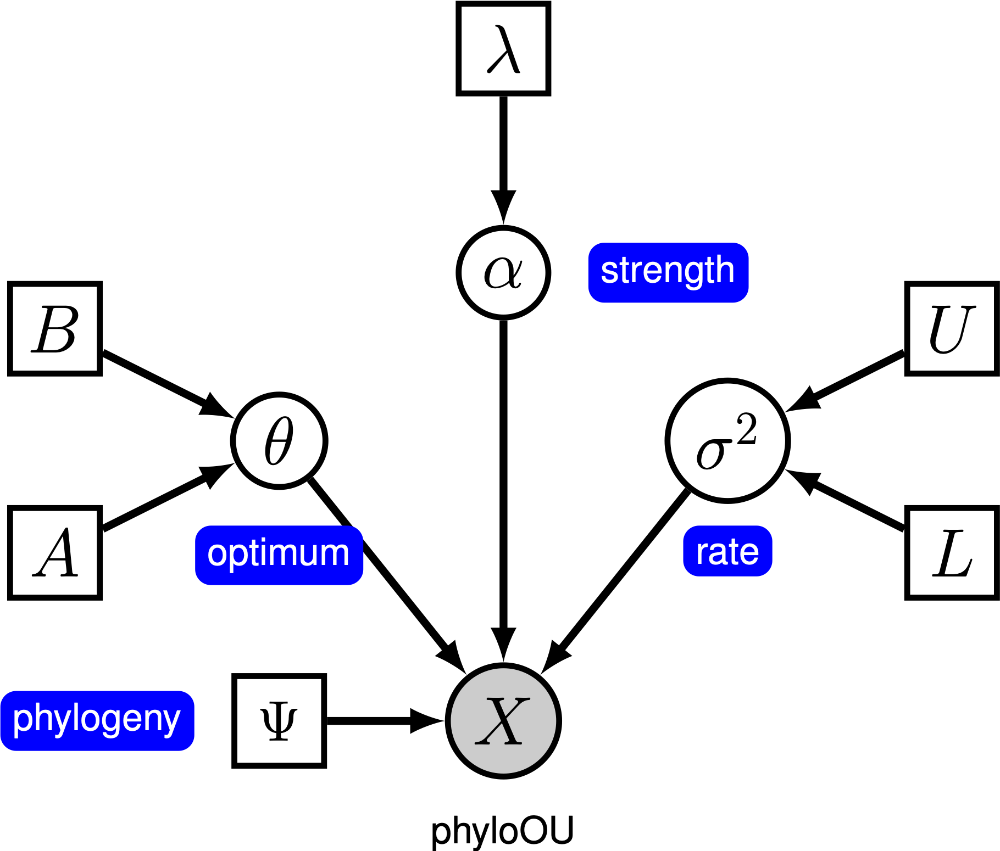
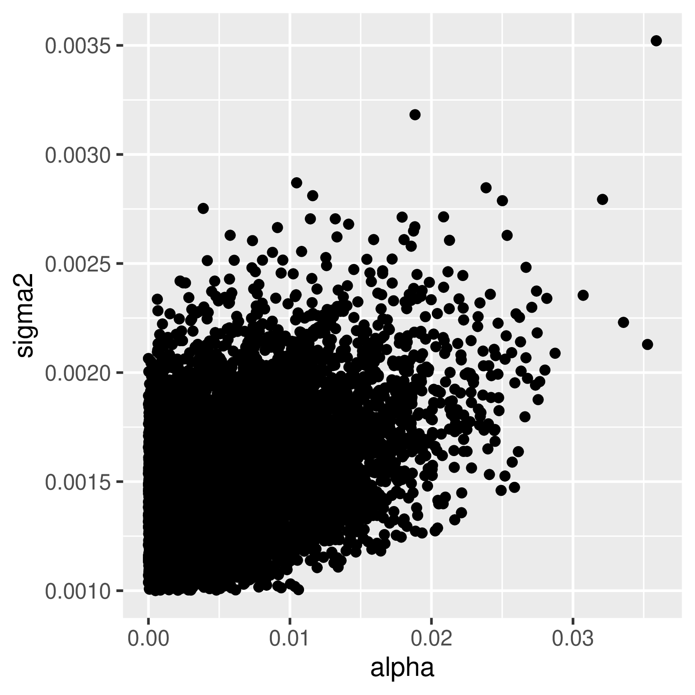

This tutorial demonstrates how to specify an Ornstein-Uhlenbeck model where the optimal phenotype is assumed to be constant among branches of a time-calibrated phylogeny (Hansen 1997; Butler and King 2004) using the datasets of (log) body-size across vertebrate clades from (missing reference). We provide the probabilistic graphical model representation of each component for this tutorial. After specifying the model, you will estimate the parameters of Ornstein-Uhlenbeck evolution using Markov chain Monte Carlo (MCMC).
Under the simple Ornstein-Uhlenbeck (OU) model, a continuous character is assumed to evolve toward an optimal value, $\theta$. The character evolves stochastically according to a drift parameter, $\sigma^2$. The character is pulled toward the optimum by a strength parameter, $\alpha$; larger values of alpha indicate that the character is pulled more strongly toward $\theta$. As the character moves away from $\theta$, the parameter $\alpha$ determines how strongly the character is pulled back. For this reason, $\alpha$ is sometimes referred to as a ‘‘rubber band’’ parameter. When the selection parameter $\alpha = 0$, the OU model collapses to the BM model. The resulting graphical model is quite simple, as the probability of the continuous characters depends only on the phylogeny (which we assume to be known in this tutorial) and the three OU parameter ().

In this tutorial, we use the 66 vertebrate phylogenies and (log) body-size datasets from (Landis and Schraiber 2017).
⇨ The full OU-model specification is in the file called mcmc_OU.Rev.
We begin by deciding which of the 66 vertebrate datasets to use. Here, we assume we are analyzing the first dataset (Acanthuridae), but you should feel free to choose any of the datasets.
dataset <- 1
Now, we read in the (time-calibrated) tree corresponding to our chosen dataset.
T <- readTrees("data/trees.nex")[dataset]
Next, we read in the character data for the same dataset.
data <- readContinuousCharacterData("data/traits.nex")[dataset]
Additionally, we initialize a variable for our vector of moves and monitors:
moves = VectorMoves()
monitors = VectorMonitors()
In this tutorial, we assume the tree is known without area. We create a constant node for the tree that corresponds to the observed phylogeny.
tree <- T
The stochastic rate of evolution is controlled by the rate parameter, $\sigma^2$. We draw the rate parameter from a loguniform prior. This prior is uniform on the log scale, which means that it is represents ignorance about the order of magnitude of the rate.
sigma2 ~ dnLoguniform(1e-3, 1)
In order to estimate the posterior distribution of $\sigma^2$, we must provide an MCMC proposal mechanism that operates on this node. Because $\sigma^2$ is a rate parameter, and must therefore be positive, we use a scaling move called mvScale.
moves.append( mvScale(sigma2, weight=1.0) )
The strength of selection toward the optimum is determined by the parameter $\alpha$. We draw $\alpha$ from an exponential prior distribution, and place a scale proposal on it.
alpha ~ dnExponential(10)
moves.append( mvScale(alpha, weight=1.0) )
We draw the optimal value from a vague uniform prior ranging from -10 to 10 (you should change this prior if your character is outside of this range). Because this parameter can be positive or negative, we use a slide move to propose changes during MCMC.
theta ~ dnUniform(-10, 10)
moves.append( mvSlide(theta, weight=1.0) )
Now that we have specified the parameters of the model, we can draw the character data from the corresponding phylogenetic OU model. In this example, we use the REML algorithm to efficiently compute the likelihood (Felsenstein 1985). We assume the character begins at the optimal value at the root of the tree.
X ~ dnPhyloOrnsteinUhlenbeckREML(tree, alpha, theta, sigma2^0.5, rootStates=theta)
Noting that $X$ is the observed data (), we clamp the data to this stochastic node.
X.clamp(data)
Finally, we create a workspace object for the entire model with model(). Remeber that workspace objects are initialized with the = operator, and are not themselves part of the Bayesian graphical model. The model() function traverses the entire model graph and finds all the nodes in the model that we specified. This object provides a convenient way to refer to the whole model object, rather than just a single DAG node.
mymodel = model(theta)
For our MCMC analysis, we need to set up a vector of monitors to record the states of our Markov chain. The monitor functions are all called mn*, where * is the wildcard representing the monitor type. First, we will initialize the model monitor using the mnModel function. This creates a new monitor variable that will output the states for all model parameters when passed into a MCMC function.
monitors.append( mnModel(filename="output/simple_OU.log", printgen=10) )
Additionally, create a screen monitor that will report the states of
specified variables to the screen with mnScreen:
monitors.append( mnScreen(printgen=1000, sigma2, alpha, theta) )
With a fully specified model, a set of monitors, and a set of moves, we
can now set up the MCMC algorithm that will sample parameter values in
proportion to their posterior probability. The mcmc() function will
create our MCMC object:
mymcmc = mcmc(mymodel, monitors, moves, nruns=2, combine="mixed")
Now, run the MCMC:
mymcmc.run(generations=50000)
When the analysis is complete, you will have the monitored files in your output directory.
⇨ The Rev file for performing this analysis: mcmc_OU.Rev
Characters evolving under the OU process will tend toward a stationary distribution, which is a normal distribution with mean $\theta$ and variance $\sigma^2 \div 2\alpha$. Therefore, if rates of evolution are high (or the branches in the tree are relatively long), it can be difficult to estimate $\sigma^2$ and $\alpha$ separately, since they both determine the long-term variance of the process. We can see whether this affects our analysis by examining the joint posterior distribution of the parameters in Tracer. When the parameters are positively correlated, we should hesitate to interpret their marginal distributions (i.e., don’t make inferences about the strength parameter or the rate parameter separately).

theta).Tracer: What is the mean posterior estimate of theta and what is the estimated HPD?Tracer to compare the joint posterior distributions of alpha and sigma2. Are these parameters correlated or uncorrelated?underPrior=TRUE in the function mymcmc.run()) Are they different (e.g., )? Is the posterior mean outside the prior 95% probability interval?Now that we can fit both BM and OU models, we might naturally want to know which model does fits better. In this section, we will learn how to use reversible-jump Markov chain Monte Carlo to compare the fit of OU and BM models.
To test the hypothesis that a character evolves toward a selective optimum, we imagine two models. The first model, where there is no selection, is the case when $\alpha = 0$. The second model corresponds to the OU model with $\alpha > 0$. This works because Brownian motion is a special case of the OU model when the strength of selection is 0. Unfortunately, because $\alpha$ is a continuous parameters, a standard Markov chain will never visit states where each value is exactly equal to 0. Fortunately, we can use reversible jump to allow the Markov chain to consider visiting the Brownian-motion model. This involves specifying the prior probability on each of the two models, and providing the prior distribution for $\alpha$ for the OU model.
Using rjMCMC allows the Markov chain to visit the two models in proportion to their posterior probability. The posterior probability of model $i$ is simply the fraction of samples where the chain was visiting that model. Because we also specify a prior on the models, we can compute a Bayes Factor for the OU model as:
where $P( \text{OU model} \mid X)$ and $P( \text{OU model})$ are the posterior probability and prior probability of the OU model, respectively.
To enable rjMCMC, we simply have to place a reversible-jump prior on the relevant parameter, $\alpha$. We can modify the prior on alpha so that it takes either a constant value of 0, or is drawn from a prior distribution. Finally, we specify a prior probability on the OU model of p = 0.5.
alpha ~ dnReversibleJumpMixture(0.0, dnExponential(10), 0.5)
We then provide a reversible-jump proposal on alpha that proposes changes between the two models.
moves.append( mvRJSwitch(alpha, weight=1.0) )
Additionally, we provide the normal mvScale proposal for when the MCMC is visiting the OU model.
moves.append( mvScale(alpha, weight=1.0) )
We include a variable that has a value of 1 when the chain is visiting the OU model, and a corresponding variable that has value 1 when it is visiting the BM model. This will allow us to easily compute the posterior probability of the models because we simply need to compute the posterior mean value of this parameter.
is_OU := ifelse(alpha != 0.0, 1, 0)
is_BM := ifelse(alpha == 0.0, 1, 0)
The fraction of samples for which is_OU = 1 is the posterior probability of the OU model. Alternatively, the posterior mean estimate of this indicator variable corresponds to the posterior probability of the OU model. These values can be used in the Bayes Factor equation above to compute the Bayes Factor support for either model.